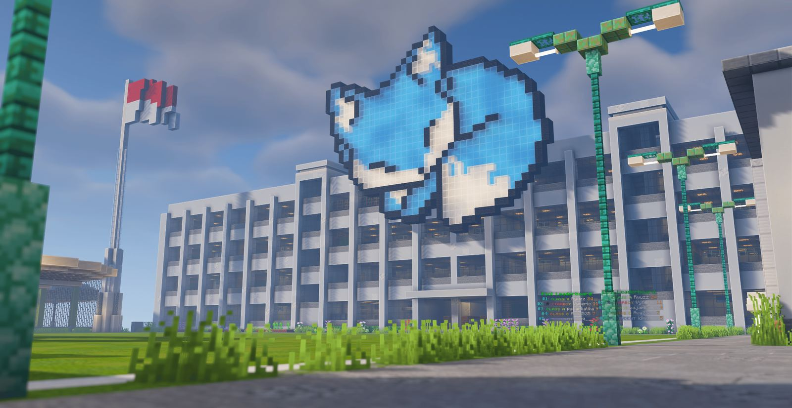

SELAMAT DATANGDI SERVER KAMI
Sora City
Server Minecraft kota untuk bermain santai, menjelajah, dan bertemu pemain lain.
PETUNJUK JALAN
Masuk ke kota dalam empat langkah
PAPAN KOMUNITAS
Temukan kami di sini
Tentang Sora City
Server publik bertema kota.

MASKOT
Si rubah putih, maskot Sora City.
Konsep
Sora City adalah server Minecraft Java Edition bertema kota. Pemain bebas menjelajah, bersosialisasi, dan mengikuti berbagai aktivitas.
Komunitas
Sora City dibangun bersama para pemainnya: ramah, santai, dan terbuka untuk pemain baru.
DATA TEKNIS
| Edisi | Java Edition |
| Versi | 1.20.1 – terbaru |
| Bedrock | Tidak didukung |
| Platform | PC & Android* |
| Tipe | Publik |
EDISIJava Edition
VERSI1.20.1 – terbaru
PLATFORMPC & Android*
TIPEPublik
BEDROCKTidak didukung
*Android memakai launcher Java seperti PojavLauncher.
Yang bisa kamu lakukan
Daftar fitur Sora City. Akan terus bertambah.
Sayama dalam gambar
Kota, lingkungan, dan aktivitas pemain.
Tim Sora City
Orang-orang yang membangun SoraCity.
SoraCity Ranks
Pilih tiket rank, lalu pesan langsung lewat WhatsApp.
Pengembang Web Sora City
Dua orang yang membangun ide website ini.